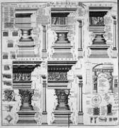

Blog Post 1
October 2,2020 by Orlando Williams

Currently, without a software the church finds it quite tedious to support and maintain their members, especially as we live now in a much restricted world since the covid19 pandemic, where face to face contact which was once their main channel to (one), access their members and also to give the necessary support to them and their businesses, is now not recommended. So in an essence the church is in a stand still as it pertains to the works it once did with its members.
It is worthy to note that the proposed software once implemented is not intended to be a stop gap until physical interactions are once again allowed but it will provide the church with long term access to their members and their businesses, as well as an upgrade to their book record system.
Blog Post 2
October 2,2020 by Orlando Williams

A column or pillar in architecture and structural engineering is a structural element that transmits, through compression, the weight of the structure above to other structural elements below. In other words, a column is a compression member. The term column applies especially to a large round support (the shaft of the column) with a capital and a base or pedestal,[1] which is made of stone, or appearing to be so. A small wooden or metal support is typically called a post, and supports with a rectangular or other non-round section are usually called piers.
For the purpose of wind or earthquake engineering, columns may be designed to resist later.
Columns are frequently used to support beams or arches on which the upper parts of walls or ceilings rest. In architecture, "column" refers to such a structural element that also has certain proportional and decorative features. A column might also be a decorative element not needed for structural purposes; many columns are engaged, that is to say form part of a wall. A long sequence of columns joined by an entablature is known as a colonnade.